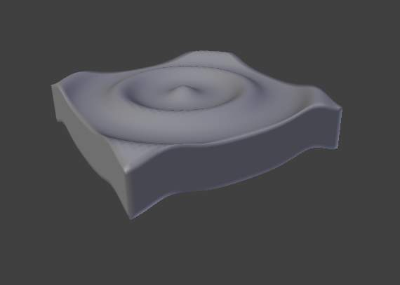
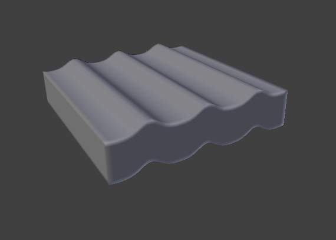
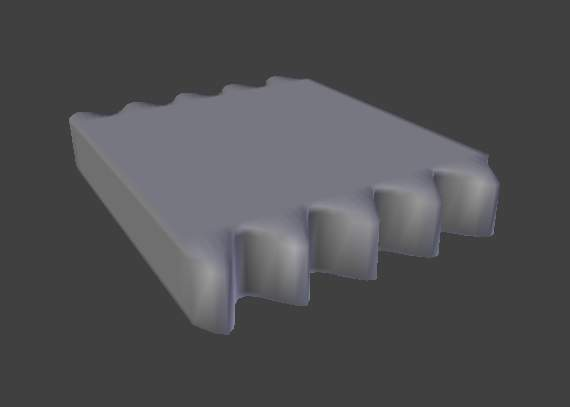

Wave Modifier¶
The Wave modifier adds a ripple-like motion to an object’s geometry.
This modifier is available for meshes, lattices, curves, surfaces and texts, with one restriction for non-mesh objects: Activating Normals or typing a name in VGroup will simply deactivate the modifier.

Circular wave front. |

Linear wave front. |

Motion enabled for X, Normals enabled for Y. |
{kind=link}
{kind=link}
{kind=link}
Options¶
Wave modifier.
- Motion
- X, Y
- The wave effect deforms vertices/control points in the Z direction, originating from the given starting point and propagating along the object with circular wave fronts (if both X and Y are enabled), or with rectilinear wave fronts (if only one axis is enabled), then parallel to the axis corresponding to the X or Y button activated.
- Cyclic
- Repeats the waves cyclically, rather than a single pulse.
- Normals
- For meshes only. Displaces the mesh along the surface normals (instead of the object’s Z-axis).
- Time
设置 to control the animation.
- Offset
- Time offset in frames. The frame at which the wave begins (if Speed is positive), or ends (if Speed is negative). Use a negative frame number to prime and pre-start the waves.
- Life
- Duration of animation in frames. When set to zero, loops the animation forever.
- Damping
- An additional number of frames in which the wave slowly damps from the Height value to zero after Life is reached. The dampening occurs for all the ripples and begins in the first frame after the Life is over. Ripples disappear over Damping frames.
- Position
- X, Y
- Coordinates of the center of the waves, in the object’s local coordinates.
- Falloff
- Controls how fast the waves fade out as they travel away from the coordinates above (or those of the Start Position Object).
- Start Position Object
- Use another object as the reference for the starting position of the wave. Note that you then can animate this object’s position, to change the wave’s origin across time.
- Vertex Group
- For meshes only. A vertex group name, used to control the parts of the mesh affected by the wave effect, and to what extent (using vertex weights).
- Texture
- Use this texture to control the object’s displacement level. Animated textures can give very interesting results here.
- Texture Coordinates
This menu lets you choose the texture’s coordinates for displacement:
- Local
- Object’s local coordinates.
- Global
- Global coordinates.
- Object
- Adds an additional field just below, to type in the name of the object from which to get the texture coordinates.
- UV
- Adds an extra UV Layer property, to select the UV layer to be used.
- Speed
- The speed, in BU (for “Blender Units”) per frame, of the ripple.
- Height
- The height or amplitude, in BU, of the ripple.
- Width
- Half of the width, in BU, between the tops of two subsequent ripples (if Cyclic is enabled). This has an indirect effect on the ripple amplitude - if the pulses are too near to each other, the wave may not reach the zero Z-position, so in this case Blender actually lowers the whole wave so that the minimum is zero and, consequently, the maximum is lower than the expected amplitude. See Technical Details and Hints below.
- Narrowness
- The actual width of each pulse: the higher the value the narrower the pulse. The actual width of the area in which the single pulse is apparent is given by 4/ Narrowness. That is, if Narrowness is 1 the pulse is 4 units wide, and if Narrowness is 4 the pulse is 1 unit wide.
Warning
All the values described above must be multiplied with the corresponding Scale values of the object to get the real dimensions.
Technical Details and Hints¶
The relationship of the above values is described here:
{kind=link}
Wave front characteristics.
To obtain a nice wave effect similar to sea waves and close to a sinusoidal wave, make the distance between following ripples and the ripple width equal; that is, the Narrowness value must be equal to 2/ Width. E.g. for Width to be 1, set Narrow to 2.